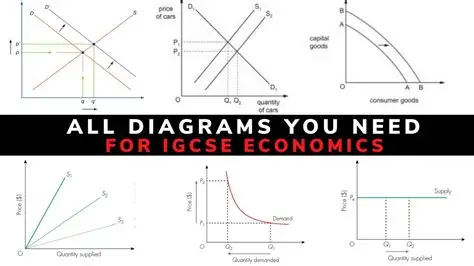
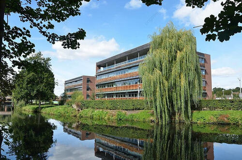
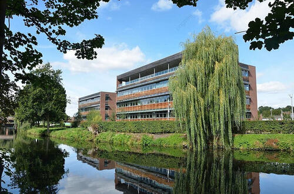

Zixu Dong
Zixu Dong is currently an undergraduate student majoring in Economics at the University of California, Riverside. Her academic focus centers on developing strong analytical and structured problem-solving skills through rigorous coursework and independent learning. She approaches her studies with discipline and long-term planning, believing that steady improvement and clear reasoning are essential for meaningful academic and professional growth.
Throughout her time at UCR, Zixu has built a solid foundation in microeconomics, macroeconomics, and quantitative analysis. These courses have strengthened her ability to interpret economic data, understand incentive structures, and evaluate how policies influence market outcomes. She pays close attention to logical consistency and clarity in both written and numerical work, and she actively works to refine her communication skills in academic settings. By balancing theoretical understanding with practical application, she continues to improve her ability to analyze complex problems from multiple perspectives.
Beyond coursework, Zixu is interested in the intersection between economics, digital platforms, and global media ecosystems. She is particularly curious about how online communities, gaming industries, and digital marketplaces shape consumer behavior and strategic decision-making. Rather than viewing technology as separate from economics, she sees it as a dynamic system driven by incentives, behavioral patterns, and data-informed strategies. This broader perspective allows her to connect classroom learning with industries that continue to evolve rapidly in the modern economy.
As an international student studying in the United States, Zixu has developed adaptability, independence, and resilience. Working in a second language while managing academic responsibilities has strengthened her time management skills and long-term discipline. She values consistency, structured goal setting, and measurable progress, and she believes that sustainable growth comes from deliberate effort rather than shortcuts.
Looking ahead, Zixu hopes to pursue opportunities in business analysis, consulting, or research-oriented roles where economic reasoning and structured thinking are valued. She is motivated by environments that encourage strategic planning, analytical depth, and continuous learning. Her long-term goal is to apply economic insight to real-world challenges while continuing to expand her understanding of global markets and digital systems.
Experience
student
• Completed analytical coursework in microeconomics and macroeconomics
• Conducted structured written analysis on market behavior and economic policy
• Applied quantitative reasoning to evaluate real-world economic scenariosp
Peer Tutor
• Assisted classmates with coursework and exam preparation
• Explained key economic and introductory coding concepts in small group sessions
• Helped peers strengthen problem-solving and analytical skills
Education
UC Riverside
University of California Riverside
University of California Riverside
Portfolio



